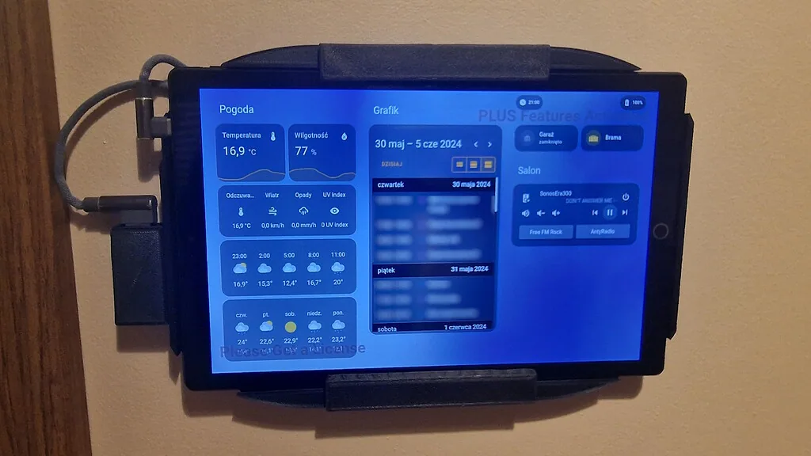

旧平板作为 Home Assistant 墙面板
- 多个社区帖子记录用旧 Android 平板、Kiosk 浏览器或二手触屏设备展示 Home Assistant 仪表板。

- 记录 L08
- 资料核查 2026-10-21
- 实机状态 KitAgain 未进行实机测试
- 3/5 个维度有可核验来源
- 仅用有可核验来源的维度计算；未取证维度保留为 null，不用中性分补位。
是否值得继续
- 当前阶段 这是多位用户的设备路线，不是单一项目；浏览器展示与 Kiosk 控制已有案例，长期安全仍需逐机验证。
- 现在能用到什么程度 较新的旧平板或手机通常可作 Home Assistant 仪表板终端，适合显示和轻量控制，不等于适合隐藏式长期供电。
- 用户价值 先用现有设备测试性能、Kiosk、断电恢复和充电策略，再决定墙体布线和支架。
- 继续跟进建议 先在桌面连续试用；性能和充电限制合格后再上墙。鼓包、异常热或变形立即淘汰。
适用设备与限制
已知可参考或可继续核查
- 社区建议约 2GB RAM 以上、较新 Android/iOS 和可用 WebView/浏览器的设备
- 帖子中的 11 英寸廉价 Android 平板能显示，但性能差且有随机 MAC 问题
- Xiaomi 平板、Samsung OLED 平板和 iPad 9 等可作为进一步试用对象
不能视为已支持
- 非常老的 WebView 或低内存设备流畅显示复杂仪表板
- 无充电上限、背部发热或电池老化的平板长期挂墙
- ESP32 屏幕直接运行完整 Lovelace 网页
缺口、下一步与风险
- 为什么仍是 E0 这是一类分散经验，不是单一软件包；浏览器内核、Android 版本、充电策略、挂墙散热和长期电池安全差异很大。
- 下一步核验 按具体平板型号收集浏览器版本、充电限制、重启恢复和 30 天运行记录，再形成正式指南。
- 风险与停止条件 已有社区作者报告长期插电后电池膨胀；旧电池、隐蔽布线和持续充电必须单独评估。
链接里分别有什么
- 11 英寸 Android 墙面板案例 ↗community-build包含廉价平板、Fully Kiosk、MQTT/Node-RED、供电、随机 MAC、散热和持续充电讨论。https://community.home-assistant.io/t/tablet-as-wall-panel/734479
- 墙面显示设备选型讨论 ↗device-selection比较旧手机、Android/iOS 平板、廉价 Lenovo、Xiaomi、Samsung OLED 平板和触屏笔记本。https://community.home-assistant.io/t/on-wall-display-for-ha-dashboard/910288